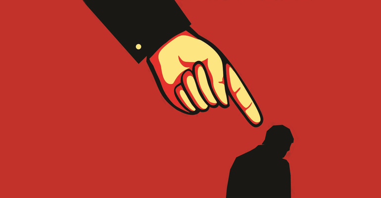

Projeto de Extenção
Assédio Moral
Assédio Moral: O que é e como se manifesta?
O assédio moral é uma forma de violência no ambiente de trabalho que acontece por meio de humilhações constantes, intimidação, desqualificação ou exposição ao ridículo. A repetição dessas atitudes é o que caracteriza o assédio moral. O objetivo do agressor é, na maioria das vezes, desestabilizar emocionalmente a vítima e forçá-la a pedir demissão.

O assédio moral pode vir de um superior hierárquico, de um colega de mesmo nível ou até de um subordinado. As agressões podem ser sutis ou explícitas e incluem:
Críticas constantes e injustificadas: o agressor aponta erros inexistentes ou desqualifica o trabalho da vítima de forma exagerada e na frente de outras pessoas.
Isolamento: a vítima é excluída de reuniões, conversas e eventos da equipe, fazendo com que se sinta isolada.
Sobrecarga ou subutilização:o agressor pode dar um volume excessivo de trabalho à vítima ou, ao contrário, retirar suas tarefas, deixando-a sem ter o que fazer.
Ameaças e humilhações: gritos, xingamentos, ameaças de demissão e outras formas de intimidação.
Monitoramento excessivo:o agressor controla cada passo da vítima e fiscaliza de forma opressiva seu tempo de trabalho.
O que a lei diz sobre o assédio moral?
Embora não exista uma lei específica no Brasil que tipifique o assédio moral, ele é considerado uma violação dos direitos da personalidade e da dignidade humana, garantidos pela Constituição Federal. A Justiça do Trabalho entende que o assédio moral pode ser motivo de rescisão indireta (quando o trabalhador tem o direito de sair do emprego recebendo as mesmas verbas de uma demissão sem justa causa) e gera o direito a indenização por danos morais.
Como agir se você é vítima de assédio moral?
Documente tudo: anote datas, horários, locais e o que aconteceu em cada situação. Guarde e-mails, mensagens de texto, áudios e outros documentos que comprovem o comportamento abusivo.
Busque testemunhas:converse com colegas que presenciaram as situações. O depoimento deles será fundamental em um processo.
Não se cale:não tenha medo de falar sobre o que está acontecendo. Procure a gerência, o setor de recursos humanos da empresa ou, em alguns casos, o sindicato da sua categoria.
Procure ajuda: o assédio moral pode causar sérios problemas de saúde mental, como ansiedade, depressão e crises de pânico. É fundamental procurar ajuda médica e psicológica.
Denuncie:se a empresa não tomar nenhuma atitude, procure o Ministério Público do Trabalho ou um advogado trabalhista. Eles podem orientá-lo sobre como entrar com uma ação na Justiça do Trabalho.
Lembre-se: o assédio moral é crime e você não precisa aceitá-lo. Defender-se é um direito.
Universidade Tiradente - UNIT